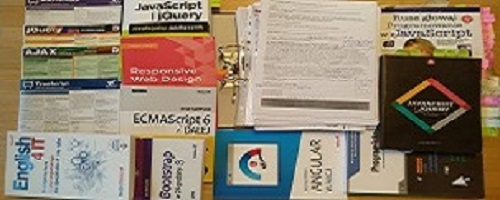

kodowanie
Kodowanie - to moja druga - a teraz to już nawet - pierwsza pasja
Kodowanie kojarzy mi się z możliwością kreowania nowej przestrzeni, a to z kolei jest dla mnie bardzo ważne, gdyż przypomina mi bliskie mojej wyobraźni, tworzenie harmonii jazzowej.
dlaczego koduję
Po przejściu na emeryturę - po 20 latach pracy w tym „znamienitym” urzędzie :-) - postanowiłem, że zanim podejmę jakąkolwiek następną pracę - chciałbym zrobić coś - co chcę robić, z czym chcę się zmierzyć i w czym chcę uczestniczyć, a nie "pakować" się w kolejne zajęcie w ramach nudnego i niejednokrotnie trudnego obowiązku. W związku z moim dość dużym zorientowaniem, co do trudnych realiów codzienności w szeroko pojętej branży muzycznej w Polsce :-), powróciłem do wręcz „nastoletniego” marzenia o tworzeniu stron internetowych. Marzenia, którego wcześniej nie mogłem nawet spróbować zrealizować. Mówię tu o „tworzeniu”, gdyż kodowanie jest mentalnie podobne do jakże mi bliskiego komponowania, aranżowania lub prafrazowania utworów. Do tego dochodzi jeszcze moje przekonanie, będące wynikiem wieloletnich obserwacji różnych interfejsów, że większości z nich przydałby się chociaż „lifting”, a najlepiej gruntowna przebudowa. „Nieco” pozmieniałbym ich formę i funkcjonalności, szczególnie pod kątem intuicyjnego aranżu layoutu i reagowania na użytkownika. Nie mając jednak żadnego doświadczenia w tej dziedzinie, ale dzięki życzliwości kilku zaprzyjaźnionych osób, podjąłem próby zgłębiania tego „tematu”, którego wynikiem jest moja poprzednia -"stara"- strona hostowana pod adresem www.winicjusz.keep.pl, zawieszona w sieci jesienią 2020r., a anstępnie inne projekty - "pokazowe kody", które można przeglądać na githubie, pod adresem www.github.com/winicjusz1. Obecna strona internetowa, którą właśnie przeglądasz, jest rezultatem wakacyjnego zaangażowania w kodowanie w 2021r. Mówiąc szczerze, bez względu na sferę pracy zawodowej, marzy mi się poznać na przynajmniej średnim poziomie zarówno frontend jak i backend gdyż tylko posiadając takie zorientowanie można by pisać holistyczny kod i stosować rozwiązania w programowaniu spójne w swojej strukturze oraz działaniu. Wymaga to jednak nauczenia się wielu języków programowania (technologii) i umiejętności ich stosowania w zależności od problemu programistycznego, zarówno w teorii jak i praktyce :-). To są tylko na razie moje plany, ale może niektóre z nich będzie mi dane spełnić, choć w ich części. Zajmuję się rozwijaniem umiejętnosci kodowania od kilkunastu miesięcy ale należałoby od tego odjąć kilka miesięcy poświęconych na choćby "Covidową edukację" naszych chłopaków, która w pierwszych trzech miesiącach zabrała nam bardzo dużo czasu i zaangażowania :-) oraz innych nieprzewidzianych sytuacji życiowych. Teraz za to, jesteśmy "specjalistami" w organizacji oraz szybkim, i efektywnym, realizowaniu edukacji zdalnej:-) - wszak "praktyka czyni mistrza" :-). Niestety mamy powody podejrzewać że jeszcze nie raz przjdzie nam z tych umiejętności skorzystać.
opisy kodów
Wszystkie przepracowane przeze mnie kody można
przejrzeć pod adresami:
www.github.com/Winicjusz1, www.github.com/Winicjusz2.
Jest tam
obecnie (tj. lato 2021r.) kilkanaście / kilkadziesiąt projektów pokazujących
różne
zaganienia programistyczne zarówno, Frontend'owe jak i Backend'owe oraz
możliwości ich tworzenia i zastosowania. Dokładne opisy tych "pokazówek" są
zamieszczone w streszczeniu, wewnątrz każdego z repozytoriów oraz w pikach
"README.md".
Niniejsza strona pt. „PrivateWebSide2” - jest
oparta na Bootstrapie z wykorzystaniem różnych źródeł danych do jej
zbudowania. Pokazuje ona możliwości modyfikowania class Bootstrapa w celu
dostosowania strony do potrzeb użytkownika, z uwzględnieniem różnych
rozmiarów ekranów. Do tak wykoananej strony z łatwością można podłączyć
javascript w celu nadania jej różnych funkcjonalności. Poprzednia moja
prywatna strona internetowa, o której wcześniej
pisałem, posiadała o wiele więcej błędów i "złych praktyk" rozwiązujących
dany problem tylko doraźnie, pwierzchownie, ale była ona
najlepszym kodem, jaki mogłem wówczas samodzielnie, bez niczyjej pomocy,
wygenerować, we wrzesiniu 2020r. W czasie budowania obecnej strony nie
korzystałem ze składni BEM, ani z preprocesora SASS oraz webpack'a, ale
wykazałem sie znajomością tych technolgii w innych projektach zawieszonych
na githubie. Nie jeste to strona stworzona z wykorzystaniem
frameworka typu Angular czy React, ale do takiego skromnego projektu nie ma
sensu angażować tak skomplikowanego narzędzia. Kolejne projekty,
obszerniejsze, będę chciał budować w oparciu o Angulara między innymi po to
aby wykazać się choćby średnią znajomością tego często wykorzystywanego
frameworka. Pogłębienia wiedzy teoretycznej, a przezdew szystkim praktyki
wymaga jeszcze znajomści ES6+ i dalej do Type Script włącznie :-)
W kolejnych projektach chciałbym stworzyć stronę, która w swoich
kodach źródłowych będzie miała oddzieloną jej warstwę wizualną (szablon) od
kontentu oraz zewnętrzne źródło danych. Podobne rozwiązanie jest
wykorzystywane np. w stronach typu „sklepy internetowe”.
co mi pomaga w kodowaniu
Na początku mojej przygody z programowaniem pomogli mi
oczywiście znajomi.
Podsyłali materiały, linki, oraz dopingowali mnie do mierzenia się z trudnym
„światem kodowania”. „Załapałem bakcyla”, więc dalej już samodzielnie
„pociągnąłem temat”. Kiedy nie byłem jeszcze zorientowany w „temacie”,
korzystanie nawet z podstawowych źródeł pisanych (w formie papierowej lub
elektronicznej) dotyczących kodowania, było wręcz niewykonalne. Dopiero gdy
przebrnąłem przez pewną ilość tutoriali i „pokleiłem” zagadnienie w całość,
mogłem „zakumać”, o co chodzi w tym dziwnym świecie znaczników, a tym samym
mogłem zacząć korzystać z różnych innych materiałów, zarówno w formie
tradycyjnej, jak i elektronicznej. Prócz tego zacząłem też korzystać z
dokumentacji poszczególnych języków programowania zamieszczonych na stronach
internetowych takich jak MDN. Na
dzień dzisiejszy „przewaliłem” kilkadziesiąt książek dotyczących
programowania oraz kilkadziesiąt tutoriali i kilkanaśie kursów na Udemy.
Zamiast wymieniać tytuły tych
książek oraz ich autorów, zamieszczam fotkę choć części "papierowej" tych
źródeł :-)

Co do
tutoriali,
to również poznałem kilkunastu, a może nawet kilkudziesięciu twórców
poszczególnych kursów, z których najbardziej spodobał mi się Roman, czyli Adam Romański :-) i
jego wskazówki dotyczace kursów. Pomocne było też poznanie stron
internetowych takich jak Stackoverflow, Devdocs, CSS-Tricks. Na liście ulubieńców
znajdują się także: Bartek
Borowczyk, z jego kursem na Udemy - o nazwie: Zaawansowane projekty w
CSS i JavaScript.,
czy Mirosław
Zelent, oraz jego kolejna inicjatywa pt. Pasja informatyki, a także, Maciej Aniserowicz, Maciej Korsan, Kamil Brzeziński,
Mateusz Kupilas, Piotr Palarz z
eduweb.pl, Adam Gospodarczyk,
i wielu wielu innych :-). Na bazie tej teoretycznej wiedzy
rozpocząłem swoje pierwsze projekty szkoleniowe, dzięki którym zacząłem
uczyć się kodowania w praktyce. Po pewnym czasie projekty te stawały się
coraz bardziej rozbudowane, aż doszły do kształtu np. niniejszej strony
internetowej. Dla porównania moim pierwszym "większym" projektem była strona
zatytułowana „kafle” - moja ówczesna przeróbka z "Divów" na bootstrapa -
zamieszczona w pierwszym
moim repozytorium na githubie pod w/w adresem www.github.com/Winicjusz1.
przyszłość
W przyszłości:
na pewno dalej TypeScript,
na
pewno Angular,
na
pewno Rest API / RESTfull API,
na pewno Django,
na pewno Node.js,
Express i MongoDB,
na pewno MySQL,
na pewno GIT,
na pewno coś z
obszaru Web Design i UX/UI,
na pewno wzorce projektowe,